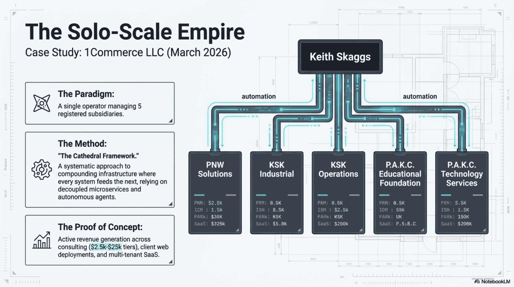
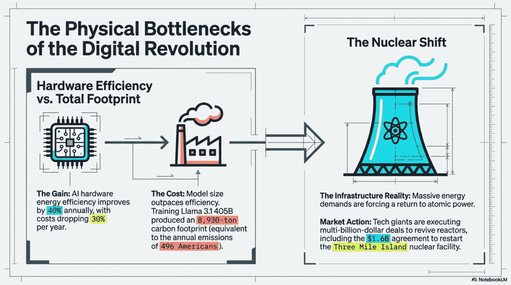
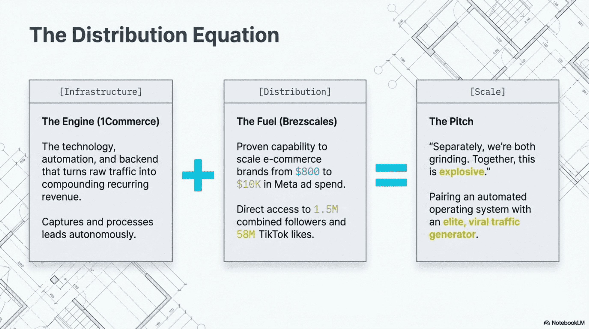
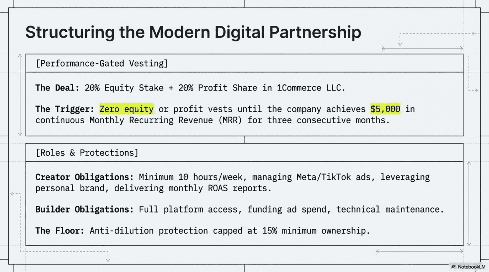
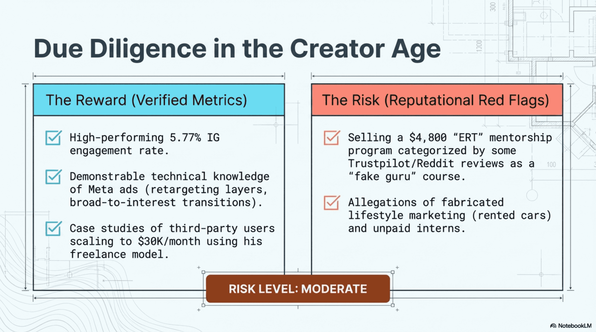

1Commerce LLC is the case study built into the AI Barbell Blueprint document. A single operator — Keith Skaggs — managing 5 registered subsidiaries via the Cathedral Framework: a systematic approach to compounding infrastructure where every system feeds the next, relying on decoupled microservices and autonomous agents. The proof of concept: active revenue generation across consulting ($2.5k–$25k tiers), client web deployments, and multi-tenant SaaS.

1Commerce LLC · Solo-Scale Empire · Cathedral Framework · March 2026
The AI-native tech stack runs four layers: The Brain (Gemini, OpenAI, Claude, Kimi AI for content generation, analysis, code), The Nerves (n8n workflow automation — trigger-based links between Shopify, Stripe, Meta, CRMs with built-in kill switches), The Muscle (GCP Cloud Run, PostgreSQL 17, Supabase with Row Level Security, Next.js across 25 active GitHub repos), and The Cash Register (automated CI/CD Shopify deployments, fully integrated Stripe subscription billing).

UnifyOne Platform Architecture · Brain · Nerves · Muscle · Cash Register
The physical bottleneck reality applies even here: AI hardware energy efficiency improves 40% annually with costs dropping 30% per year, but model size outpaces efficiency. Training Llama 3.1 405B produced an 8,930-ton carbon footprint — equivalent to the annual emissions of 496 Americans. The macro response: tech giants executing multi-billion-dollar deals to revive nuclear reactors, including the $1.6B agreement to restart Three Mile Island. The Nvidia GPU servers now available to the 1Commerce stack are part of this infrastructure layer.

Hardware Efficiency vs Total Footprint · The Nuclear Shift
The Distribution Equation and the Partnership Model
The distribution equation: Infrastructure (1Commerce as the engine) + Distribution (Brezscales: 1.5M combined followers, 58M TikTok likes, proven capability to scale brands from $800 to $10K in Meta ad spend) = Scale. The pitch: "Separately, we're both grinding. Together, this is explosive." Pairing a solo-scale automated operating system with an elite viral traffic generator.

The Distribution Equation · 1Commerce + Brezscales · The Audience + Engine Model
The deal structure: performance-gated vesting — 20% equity stake + 20% profit share in 1Commerce LLC. Trigger: zero equity or profit vests until $5,000 in continuous MRR for three consecutive months. Creator obligations: minimum 10 hours/week, managing Meta/TikTok ads, delivering monthly ROAS reports. Builder obligations: full platform access, funding ad spend, technical maintenance. Anti-dilution protection capped at 15% minimum ownership.

Performance-Gated Vesting · $5K MRR Trigger · Roles and Protections
The due diligence reality: this is a verified creator with 5.77% Instagram engagement rate and demonstrable Meta ads technical knowledge. The risk flags are documented — $4,800 "ERT" mentorship reviews categorized as moderate-risk, allegations of lifestyle fabrication. Risk level: moderate. Not disqualifying, but requiring contract protections and performance triggers before any equity vests.

Due Diligence · Verified Metrics vs Reputational Red Flags · Risk Level: Moderate